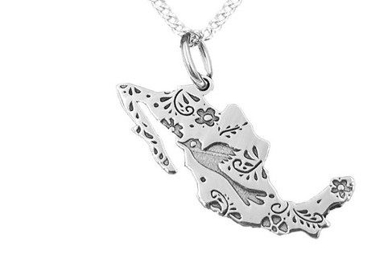

Acerca de los dijes

1¿Que significa portar un dije?
Símbolo de ternura, pacifismo y aventura. Representa la fe y es amuleto de protección. Estos significados de los dijes, para aquellas personas que busquen comprar uno puedan saber qué es lo que representa cada símbolo.
2¿Por qué uno de plata?
La plata ayuda a mantener una temperatura estable en el cuerpo lo que ayuda a prevenir enfermedades, es muy saludable usarla cuando hace frío o cuando hacemos deporte ya que nos regulará la temperatura corporal no nos afectarán tanto los cambios bruscos de temperatura.
Beneficios de portar un dije de plata

Ayudar a mejorar la temperatura corporal

Detector de sustancias tóxicas